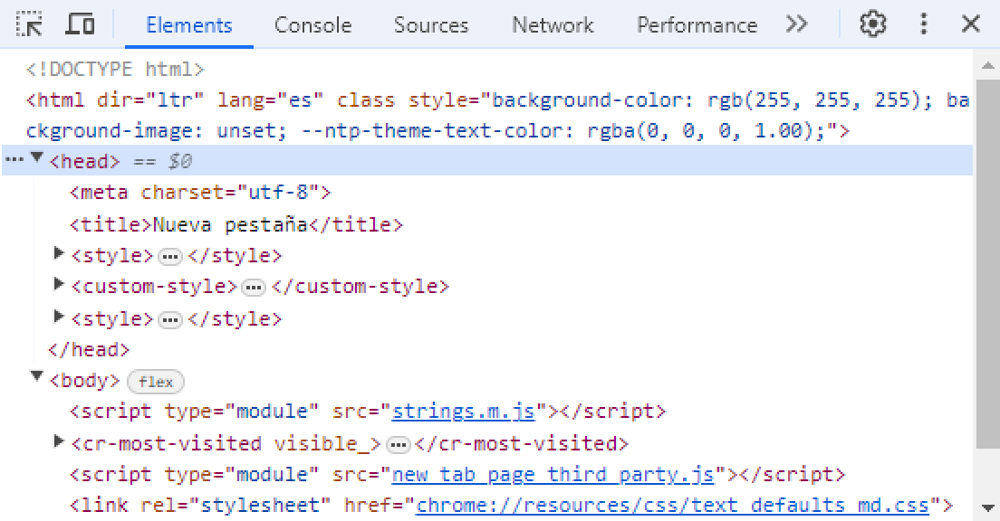
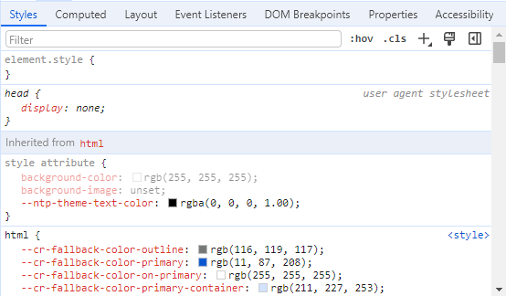

Herramientas de desarrollo
Todos los navegadores web modernos incluyen un potente conjunto de herramientas para desarrolladores. Estas herramientas hacen una variedad de cosas, desde inspeccionar HTML, CSS y JavaScript actualmente cargados, hasta mostrar qué activos ha solicitado la página y cuánto tiempo tardaron en cargarse.
Aquí veremos las de Google Chrome:
1¿Cómo abrirlas?
Más herramientas ➤ Herramientas del desarrollador
Click derecho ➤ Inspeccionar
2Visualización de elementos
Es la primera pestaña que se abrirá y te permite ver cómo está estructurado el archivo HTML.
3Visualización de estilos
Justo abajo se encuentra la pestaña que permite visualizar el archivo de estilos de la página
JavaScript

JavaScript (abreviado comúnmente JS) es un lenguaje de programación interpretado, dialecto del estándar ECMAScript. Se define como orientado a objetos, basado en prototipos, imperativo, débilmente tipado y dinámico.
Se utiliza principalmente del lado del cliente, implementado como parte de un navegador web permitiendo mejoras en la interfaz de usuario y páginas web dinámicas y JavaScript del lado del servidor (Server-side JavaScript o SSJS). Su uso en aplicaciones externas a la web, por ejemplo en documentos PDF, aplicaciones de escritorio (mayoritariamente widgets) es también significativo.
Desde 2012, todos los navegadores modernos soportan completamente ECMAScript 5.1, una versión de JavaScript. Los navegadores más antiguos soportan por lo menos ECMAScript 3. La sexta edición se liberó en julio de 2015.
React JS

React (también llamada React.js o ReactJS) es una biblioteca Javascript de código abierto diseñada para crear interfaces de usuario con el objetivo de facilitar el desarrollo de aplicaciones en una sola página. Es mantenido por Facebook y la comunidad de software libre. En el proyecto hay más de mil desarrolladores libres.
React intenta ayudar a los desarrolladores a construir aplicaciones que usan datos que cambian todo el tiempo. Su objetivo es ser sencillo, declarativo y fácil de combinar. React sólo maneja la interfaz de usuario en una aplicación; React es la Vista en un contexto en el que se use el patrón MVC (Modelo-Vista-Controlador) o MVVM (Modelo-vista-modelo de vista). También puede ser utilizado con las extensiones de React-based que se encargan de las partes no-UI (que no forman parte de la interfaz de usuario) de una aplicación web.
Express JS

Express.js, o simplemente Express, es un marco de aplicación web back-end para crear API RESTful con Node.js, lanzado como software gratuito y de código abierto bajo la licencia MIT. Está diseñado para crear aplicaciones web y API. Se le ha llamado el marco de servidor estándar de facto para Node.js.
El autor original, TJ Holowaychuk, lo describió como un servidor inspirado en Sinatra, lo que significa que es relativamente mínimo con muchas funciones disponibles como complementos. Express es el componente back-end de pilas de desarrollo populares como MEAN, MERN o MEVN, junto con el software de base de datos MongoDB y un marco o biblioteca de front-end JavaScript.